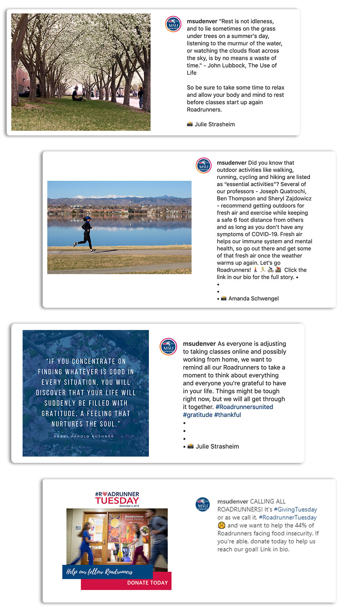

Content Developmet, Writing & Photography
I worked at MSU Denver for over two years as a media relations assistant and photographer in the Strategy, Marketing and Communications department. During which time I was involved in various projects, some which I will showcase here. My notable projects that I would like to showcase here included developing content for their Experts Guide website and social media, writing promotional articles, and capturing many events and people on camera for marketing campaigns and editorials.
I wrote and developed a lot of content for the university during my time there.
A lot of the content development involved working within a web development system called TerminalFour improving the content of the Experts Guide website. The work included updating or editing the majority of the individual expert profiles, and developing countless new profiles, so that the media relations team can better market university’s experts to local media.
The other type of content development I was involved in was on the social media side. I worked with the social media team to develop strategic Instagram posts that helped boost user engagement, connect with their students, and helped grow the university’s brand identity.
Experts Guide
Social Media
Aside from content style writing, I also wrote several promotional articles that were published on the university’s online magazine R.E.D. and The Denver Post’s YourHub online. Here are my top two articles.
What does it mean to be human? The ending scene of Guillermo del Toro’s 2017 film “The Shape of Water” sums up the unconditional love that developed between a mute woman and a merman. Science fiction shows us that being human is more than meets the eye... Read more
The day started out gloomy, windy and chilly. As I sat down with my group to eat some lunch before starting three hours of volunteer work, I worried it was going to be a chilly day of picking up trash along the Platte River. But rest assured, Colorado weather turned out to be as drastic and unpredictable as ever and so was the task at hand... Read more
Working for the main marketing department of the university, I also had the opportunity to photograph many university and campus events, quite a few of which were used for various marketing campaigns and editorials. Here are just a select few of top photos.